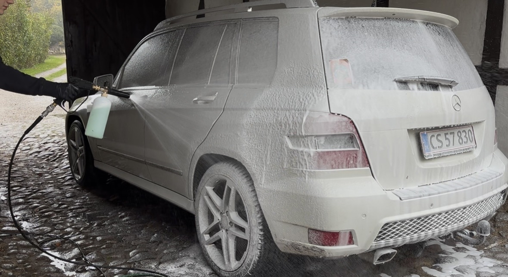

Professionel udvendig bilvask med fokus på kvalitet
Vores udvendige bilvask i Svendborg er for dig, der ønsker en grundig og skånsom rengøring af bilen. Vi fjerner snavs, salt og skidt, samtidig med at vi beskytter lakken og giver bilen et flot, velplejet udseende.



Dette er inkluderet i udvendig bilvask
- Forvask for fjernelse af snavs og skidt
- Grundig håndvask med skånsomme produkter
- Skylning og aftørring for pletfrit resultat
- Vinduesrens
- Rens af hjul og fælge
Tilkøb til udvendig bilvask
- Voksbehandling – +99 kr
Hvorfor vælge os til udvendig bilvask?
Hos Svendborg Bildetail går vi op i kvalitet, grundighed og kundetilfredshed. Vi hjælper bilejere i Svendborg og omegn med professionel bilpleje, der både forbedrer bilens udseende og beskytter lakken på længere sigt.
Ofte stillede spørgsmål
Hvor ofte bør man få udvendig bilvask?
Vi anbefaler udvendig bilvask hver 2.–4. uge afhængigt af vejr, kørsel og årstid – især om vinteren, hvor salt kan skade lakken.
Er håndvask bedre end maskinvask?
Ja, håndvask er mere skånsom og reducerer risikoen for vaskeridser sammenlignet med traditionel maskinvask.